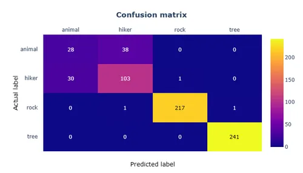

AI: Image classifier
AI with Tensorflow
This section exposes the basics of Tensorflow that I learnt. As stated before, I use Google Colab to get familiar with the tensorflow library. The purpose of this first part is to get more familiar with the concept of tensor and how to manipulate them using tensorflow. I have been introduced to these subjects:
- Tensor initialization and casting
- Math operations
- Linear operations
- TensorFlow's common functions and tensor manipulation
- Types of tensor: RaggedTensor, SparseTensor and string tensors
Loading and managing datasets
When I first started, I found it quite confusing and spent time figuring out how to load and manage datasets. Therefore, I will be summarizing the bare minimum to do so. Tensorflow makes available some pre-built datasets that can be loaded easily. The tf.keras.datasets provides few common datasets such as CIFAR10, MNIST ... We just need to invoke the load_data() method to load the dataset. The tensorflow_datasets (tfds) API allows to load a wider range of commonly used datasets: to know more, see there. This is a high level wrapper intended to make it easy to load commonly used datasets.
To load its own dataset, I recommand using the tf.keras.preprocessing.image_dataset_from_directory. We just need to specify the path to the directory containing all classes put in sub-directories.
Over the course of the tutos I have been following, I worked with tfds as it more convenient to work with pre-built and labelled datasets when we did not have my own. Anyway, all 3 methods returns images in a tf.data.Dataset class object. As a result, we benefit from all functions of this class.
Overall, the tf.data is a powerful API to create complex input data pipelines for various type of datasets. Complex means that it does not just load the dataset but can also perform shuffling, splitting, resizing ... This API allows also to create custom data pipelines for one own dataset.
Embedded IA for computer vision
Building an image classifier
Terminology
Here I expose some basic terminology related to deep learning.
Batch/Epoch
A batch is a set of input samples. Usually, we feed a model using batches of data and not the data sample by sample. In the case of an image classifier, this means that instead of feeding the model with only one image at a time, we give it several images in row before performing backpropagation (or weight-tuning)*.
An epoch is a full pass through the entire dataset. In other words, it is the number of times the model has seen the entire dataset during the training process. For example, if we have 1000 images and a batch size of 100, then it will take 10 iterations to complete 1 epoch.
* backpropagation generally relies on the gradient descent optimization method.
Training/Validation/Test datasets
The training dataset is used to train the model. It merely means that backpropagation is operated while using this dataset.
The validation dataset is used to test the model while training. The major difference is that backpropagation is not operated with this dataset, so that is does not influence the model. In fact, it allows to evaluate objectively our model performances.
The test dataset is used after the training session. It consists of data that the model has never seen.
Loss/Accuracy
A loss function is computed after each data feeding. This loss function measures the deviation between the model prediction and the actual value (i.e., class of the image) of the data such that the model knows if it predicted well or not. From this loss function, the model will perform backpropagation* to adjust its weights and biases. The goal is to minimize the loss function.
The accuracy is the percentage of correct predictions. There exist many metrics to measure the accuracy of a model. The most common one is the confusion matrix. It is a matrix that shows the number of correct and incorrect predictions made by the model compared to the actual outcomes (target value) in the data.
* In fact, we seek to minimize the loss function's average after each batch pass-through.
Supervised/Unsupervised learning
...
Underfitting/Overfitting
If underfit, the model does not manage to make the loss function diminish (stabilizes quite fast after a few epochs)
If overfit, the model does manage to make the loss function's training set diminish but not the loss function's validation set. In other terms, the model becomes good at predicting but only for the training set. The illustrations* below show the loss and accuracy of a model that overfits. We notice that after 4 epochs, the loss function's training set diminishes, while the loss function's validation set increases (opposite for the accuracy).
* This was taken from a training session on my Google Colab notebook with a batch size of 30.
Data augmentation
Data augmentation consists in operating slight changes in the input data in order to create new data. This new data is therefore not exactly the same as the original data but the object properties are preserved. This aims to attenuate the overfitting phenomenon to occur. Among other things, this can consist in modifying the saturation/brightness of colors, the orientation of the image, the zoom, etc.
Hyper-parameters
Hyper-parameters are parameters that are not learned by the model. They are set before the training process and are used to control the training process. They emcompass settings such as:
- the number of epochs;
- the batch size;
- the learning rate;
- the optimizer (most commonly used is SGD);
- the loss function (such as Huber loss: mix of quadratic and linear difference);
- the activation function (sigmoid, ReLu, tanh ...);
- the number of layers;
- and many more ...
Procedure
By following this link, you will get to my Google Colab notebook.
Implementation
Terminology:
- measure loss/accuracy: confusion matrix, true/false positive/negative, per-class accuracy, F1 scores
- supervised, unsupervised learning